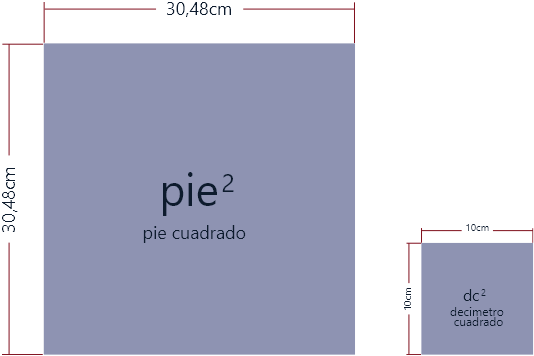

Introducción
El molde patrón es una herramienta básica en la producción de los productos en marroquinería ya que se presenta como la solución inicial y como su nombre lo dice una pieza maestra con la que se balancea todo el resto del contenido generado en un proceso marroquinero. Este molde patrón es una muestra real en formato que funciona como base productiva y su importancia se presenta en el presente material de formación, inicialmente se hace una descripción general de lo que significa y luego se hacen las muestras necesarias para que el aprendiz aprenda con una metodología de enseñanza centrada en el ejemplo cómo puede lograr esos moldes patrón de diferentes piezas, este componente trabaja con bolsos y billeteras pero su aplicación es general para todos los productos y categorías en marroquinería, bienvenido.
1. El molde patrón
Cuando se observa un artículo de marroquinería como un bolso o billetera, se puede visualizar una composición de diferentes piezas ancladas que conforman el todo; en el corte de estas piezas se hace necesario la elaboración de moldes y con ello la importancia de conocer las líneas de construcción, puntos de referencias y marcas; porque cada molde será usado en el corte o armado del producto final y con un buen diseño se logra un buen trabajo desde el principio del proceso como lo dice Gloria Marulanda (2007) “Son el diseñador y el modelista quienes proceden a identificar los escenarios donde el consumidor se desenvuelve: el entorno social, laboral. económico y religioso. Esto les permite identificar los componentes básicos de la propuesta de moda en términos de siluetas, materiales, texturas, accesorios, detalles”.
1.1 Líneas de construcción para la elaboración del molde patrón.
Son las líneas que tienen como objetivo trazar la simetría y diseño acertado del modelo y se dividen en las siguientes:

Líneas guía: líneas iniciales para realizar simetría se deben trazar y grafar.
Líneas constructivas: puntos o marcas que indican cómo construir el molde.
Piquetes: pequeños cortes en ángulo para identificar puntos de armado claves.
Marcado de moldes: información sobre referencia del bolso, pieza del bolso, piezas a cortar, material a cortar, aumentos, entre otros.
Calado: cortes pequeños con los cuales se pueden marcar con mina de plata, la posición de otras piezas del bolso para el armado.
1.2 Moldes patrón
A continuación, se muestran las líneas de construcción para la elaboración del molde patrón tomando como ejemplo el fuelle y el frente de un bolso tipo Baúl.
También se muestra el correcto marcado de un molde el cual nos da información acerca de la referencia, las piezas a cortar y aumentos posteriores a la elaboración del patrón.
Revisemos el proceso de trabajo para la elaboración del molde patrón, para este ejemplo se trabaja el bolso tipo baúl, para ello haga clic en cada uno de los enlaces que se presentan a continuación:
Paso 1: Modelado bolso tipo baúl por el fuelle sobre cartulina.
Paso 2: Medición y modelado de base, frente y espalda.
Paso 3: Aumento molde de bolso tipo baúl, fuelle con aumentos.
Los materiales que se usan en la elaboración de este molde de tipo patrón son los siguientes: escuadras, compas, cartulina, lápices, borrador, cinta métrica, micro punta de colores, cuchilla de corte.
Molde patrón “Fuelle”, líneas de construcción
Molde con aumentos “Fuelle”
Molde patrón “Frente”
Molde con aumentos “Frente”
Para concluir el presente punto no olvides que:
Las líneas de construcción para la elaboración de moldes son fundamentales en el modelaje de marroquinería
Hay que recordar que el molde patrón no tiene aumentos, sirve para constatar las dimensiones y proporciones del bolso.
Los patrones son la base para dar los aumentos para guarnición.
Los moldes que tienen aumentos sirven para cortar el material con el cual se va a elaborar el producto.
Ahora si como lo dice Ramírez (2009) inicia el trabajo “Después del diseño y elaboración de los patrones que forman un nuevo estilo de calzado, se puede decir que en el corte y troquelado se inicia el proceso productivo propiamente dicho, ya que es aquí donde se le da a la piel u otros materiales la misma forma de las piezas patrones”.
2. Materiales e insumos utilizados en marroquinería.

En este capítulo se abordarán los conceptos relacionados con las unidades de medida más usados en este proceso. La atención se centrará en conceptos como metrología, el sistema de medición y el principal sistema de unidades.
2.1 Metrología.

La metrología es la ciencia e ingeniería de la medida, incluyendo el estudio, mantenimiento y aplicación del sistema de pesos y medidas.
Actúa tanto en los ámbitos científico, industrial y legal, como en cualquier otro demandado por la sociedad.
Su objetivo fundamental es la obtención y expresión del valor de las magnitudes, garantizando la trazabilidad de los procesos y la consecución de la exactitud requerida en cada caso; empleando para ello instrumentos métodos y medios apropiados.
2.2 Medición
La medición es la acción de medir, o sea, determinar mediante instrumentos o mediante una relación o fórmula previa un resultado dentro de los parámetros escogidos.
La medición deriva del verbo medir que a su vez viene de la palabra latina metriri que significa: “comparar una cantidad con su respectiva unidad, con el fin de averiguar cuántas veces la segunda está contenida en la primera” RAE (2020).
La medición sirve para determinar magnitudes de un objeto en relación con otro objeto que sirve de patrón, que es definido antes por un consenso. Hoy en día, estos modelos de comparación que usamos todos los días como, por ejemplo, el kilo, la temperatura y los centímetros, están unificados en lo que se conoce como el Sistema internacional de medidas (SI).
2.3 Sistema Internacional (SI)
El Sistema Internacional de Unidades, abreviado S.I., también denominado Sistema Internacional de Medidas, es el heredero del antiguo sistema métrico decimal, por lo que el S.I. también es conocido de forma genérica como sistema métrico.
Es un sistema constituido por siete unidades básicas: metro, kilogramo, segundo, kelvin, amperio, mol y candela, que definen a las correspondientes magnitudes físicas fundamentales y que han sido elegidas por convención y se nombran como lo dice Llópiz & Gómez (1998) “Existen varias reglas y especificaciones en cuanto al uso de la simbología del SI.Se recomienda el uso de letras minúsculas en los símbolos o las abreviaturas (ejemplos: m, kg, s, mol,cd )”.
2.4 Magnitud y unidades básicas

La magnitud física es una propiedad de los cuerpos y elementos que permite que sean medibles y, en algunos casos, observables. Asimismo, las magnitudes pueden ser de dos tipos: escalares y vectoriales en las que las primeras tienen la opción de indicar con un número el valor mientras que las vectoriales necesitan también un vector de representación que actúa para complementar la información numérica como por ejemplo la fuerza que tiene un valor y un sentido.
En el Sistema Internacional de Unidades, las magnitudes que se cuantifican son:
2.5 Múltiplos y submúltiplos del metro
La siguiente tabla presenta los símbolos y equivalencias de los múltiplos de la unidad de medida metro, se debe saber que los submúltiplos son los que se usan en la industria del cuero.


Conversiones submúltiplos de longitud
Equivalencias del metro.

Unidades del metro.
2.6 Conversión del sistema inglés al SI
“Desde el nacimiento de la civilización, la comparación ha sido siempre muy importante. De hecho uno de los primeros conceptos que los niños aprenden en la escuela es el concepto de la relación de orden expresada por más pequeño o más grande que e inclusive, es igual que” Ledanois & López 1996; es por esa medición y esa gestión que se hace necesario relacionar todos los conceptos de medidas trabajados hasta el momento y lograr un factor de equilibrio que permita trabajar las unidades de los dos sistemas de manera equivalente como lo muestra la siguiente tabla con la que se puede realizar las conversiones necesarias en el área del cuero y la marroquinería para el trabajo.

2.7 Unidades de medida del cuero en el comercio
Comercialmente en las talabarterías y en los diferentes centros de acopio y comercialización del cuero se presentan las siguientes medidas, usted como marroquinero debe tenerlo en cuenta porque es la parte que va a direccionar el costo del producto entre otros factores.
2.8 Instrumentos para medir utilizados en marroquinería
Estos son los instrumentos más comunes a la hora de medir en marroquinería
Calibrador, también llamado pie de rey o calibre vernier
“El pie de rey incluye dos juegos de pinzas que sirven para medir exteriores e interiores. Además, gracias a la sonda de profundidad, el calibre tipo pie de rey también se puede usar para medir el fondo de un orificio ciego, ranuras, cavidades, etcétera” Papelería-Técnica (2020).

Micrómetro, también llamado tornillo de Palmer
“Un micrómetro, también llamado Tornillo de Palmer, es un instrumento de medición cuyo funcionamiento está basado en el tornillo micrométrico y que sirve para medir las dimensiones de un objeto con alta precisión, del orden de centésimas de milímetros (0,01 mm) y de milésimas de milímetros (0,001mm)” Ingeniería Mecafenix (2018).
Micrómetro digital
“El micrómetro digital es un instrumento portátil para medir longitudes entre sus dos contactos de medida. El sistema de medida es directo y consta de un cuerpo con un tope fijo y otro móvil provisto de una cabeza micrométrica. La ejecución de la medición da como resultado la longitud de un elemento. El micrómetro digital suele tener un campo de medida de 25 mm aunque existen micrómetros de medidas superiores a 1 metro” Femto (2020).

Cinta métrica
“Instrumento de medida que consiste en una cinta flexible graduada y se puede enrollar, haciendo que el transporte sea más fácil” Ecured (2020).
Regla graduada
“Regla graduada Instrumento de medición con forma de plancha delgada y rectangular que incluye una escala graduada dividida en unidades de longitud, por ejemplo, centímetros o pulgadas” Ecured (2020).
A manera de conclusión se presentan los siguientes puntos para que los tenga en cuenta:
El Sistema Internacional de Medidas, es el sistema que utilizamos en nuestro país.
Las medidas son importantes para la estandarización.
Existen medidas del sistema inglés en el mercado las cuales pueden convertirse fácilmente SI.
El cuero puede encontrarse en unidades de pie² o decímetro².
Existen varios instrumentos de medida para el área de marroquinería que nos ayuda a estandarizar y contabilizar la materia prima.
3. Los sistemas de modelaje
A continuación, se presentan una serie de videos con los modelajes de cada elemento, lo invitamos a revisarlos todos.
3.1 Bolso tipo pinza
Bolso tipo pinza boceto.
El primero de los videos muestra el orden en que se recomienda hacer el boceto junto con la forma ideal para producirlo.
Bolso tipo pinza paso 1 molde patrón
Bolso tipo pinza paso 2 portacremallera
Bolso tipo pinza paso 3 ubicación de chapetas en el molde patrón
Bolso tipo pinza paso 4 bocacremallera
Bolso tipo pinza paso 5 molde del forro
Bolso tipo pinza paso 6 refuerzo de la base
Bolso tipo pinza paso 7 manija del bolso
Bolso tipo pinza paso 8 puntera cremallera
Bolso tipo pinza paso 9 industrialización de moldes
3.2 Bolso curvo con pinza
Bolso curvo con pinza paso 1 elaborar el molde patrón
Bolso curvo con pinza paso 2 falso interno o portacierre
Bolso curvo con pinza paso 3 forro del bolso
Bolso curvo con pinza paso 4 industrialización de los moldes
3.3 Bolso con base
Bolso con base paso 1 elaboración molde de la base
Bolso con Base Paso 2 cuerpo del bolso
Bolso con base paso 3 falso interno portacierre
Bolso con base paso 4 forro del bolso
Bolso con base paso 5 y 6 refuerzo base:
3.4 Bolso de giro
Bolso de giro paso 1
Bolso de giro elaboración fuelle del bolso paso 2
Bolso de giro paso 3 y 4
3.5 Billetera larga
Billetera larga paso 1 elaborar molde patrón
Billetera larga paso 2 elaborar forro
Billetera larga paso 3 elaborar falso de la tapa
Billetera larga paso 4 elaborar molde de la billetera
Billetera larga paso 5 elaborar molde del forro de la billetera
Billetera larga paso 6 elaboración molde lomo o giro
Billetera larga paso 7 elaborar molde del portadocumentos
Billetera larga paso 8 elaborar falsos internos
4.6 Elaboración de molde billetera corta
Glosario
Herramientas:Son aquellos bienes tangibles que generalmente son de hierro o acero y que se usa con las manos y que sirve para realizar un determinado trabajo.
Máquinas:Son aquellos bienes tangibles que están formados por diferentes piezas móviles y fijas que aprovechan la energía que tiene para realizar un trabajo determinado.
Materia prima:Es el material extraído de la naturaleza susceptible de cambio o transformación industrial que se usan como base para la elaboración de nuevos productos.
Producto:Son bienes como mercancías u objetos pero también pueden ser servicios, los cuales van a cumplir una función social al suplir una necesidad del mercado (consumidores). Zapatos, libros etc.
Material complementario
| Nombre del documento o material. | Tipo de material. | Enlace del Recurso. |
|---|---|---|
| Chicaiza, D. (2020). Baúl UTS fuelle. | Video grabado por el experto técnico | ver |
| Chicaiza, D. (2020). Baúl UTS2. | Video grabado por el experto técnico | ver |
| Chicaiza, D. (2020). Baúl UTS3. | Video grabado por el experto técnico | ver |
| Stefanelli (2020). Calibre virtual simulador milimetro. | Calibrador Pie de Rey virtual | ver |
| Khan Academy (2020). Conversión de unidades: distancia métrica. | Recurso interactivo de práctica | ver |
Referencias bibliográficas
Ecured (2020). Cinta métrica. https://www.ecured.cu/Cinta_m%C3%A9trica#:~:text=Instrumento%20de%20medida%20que%20consiste,diferentes%20materiales%20y%20diferentes%20longitudes
Ecured (2020). Regla graduada. https://www.ecured.cu/Regla_graduada
Fento Instruments (2020). Micrometro digital | FEMTO. https://femto.es/micrometro-digital
Ingeniería Mecafenix (2018). ¿Qué es el micrómetro y para qué sirve? https://www.ingmecafenix.com/medicion/micrometro/
Marulanda, G. (2007). CARTILLA DE MARROQUINERÍA MODELAJE DE BOLSOS. https://repositorio.sena.edu.co/bitstream/11404/4866/1/cartilla_marroquineria_modelaje_bolsos.pdf
Ledanois, J. & López, A. (1996). Magnitudes, dimensiones y conversiones de unidades. https://books.google.es/books?hl=es&lr=&id=ukHjzFoHPtIC&oi=fnd&pg=PA1&dq=conversi%C3%B3n+de+unidades+si+&ots=_yNKN1Xz5j&sig=_o71cwCfhooGLmc4f29CUKbnjYA#v=onepage&q=conversi%C3%B3n%20de%20unidades%20si&f=false
Llópiz, M & Gómez, O. (1998). El sistema internacional de unidades. https://saludpublica.mx/index.php/spm/article/view/138/131
Papelería-Técnica (2020). ¿Qué es un pie de rey y para qué sirve? Información sobre el calibre tipo pie de rey. https://papeleria-tecnica.net/que-es-un-pie-de-rey/
RAE (2020). Medir. https://dle.rae.es/medir
Ramírez, A. (2009). Reutilización de retales de cuero para la elaboración de una línea de productos de marroquinería. https://repositorio.ucp.edu.co/bitstream/10785/422/1/completo.pdf
Fotografías y vectores tomados de https://www.shutterstock.com/ y https://www.freepik.es/
Licencia Creative Commons
CC BY-NC-SA
Ver licencia.